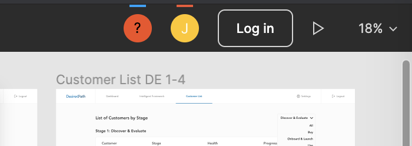
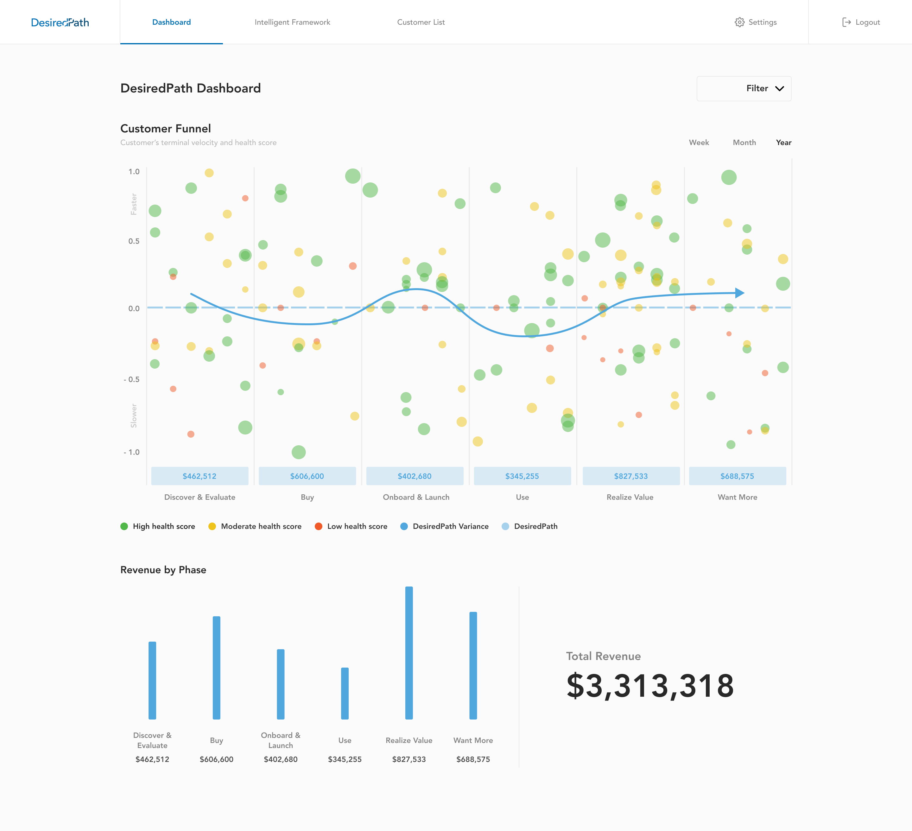
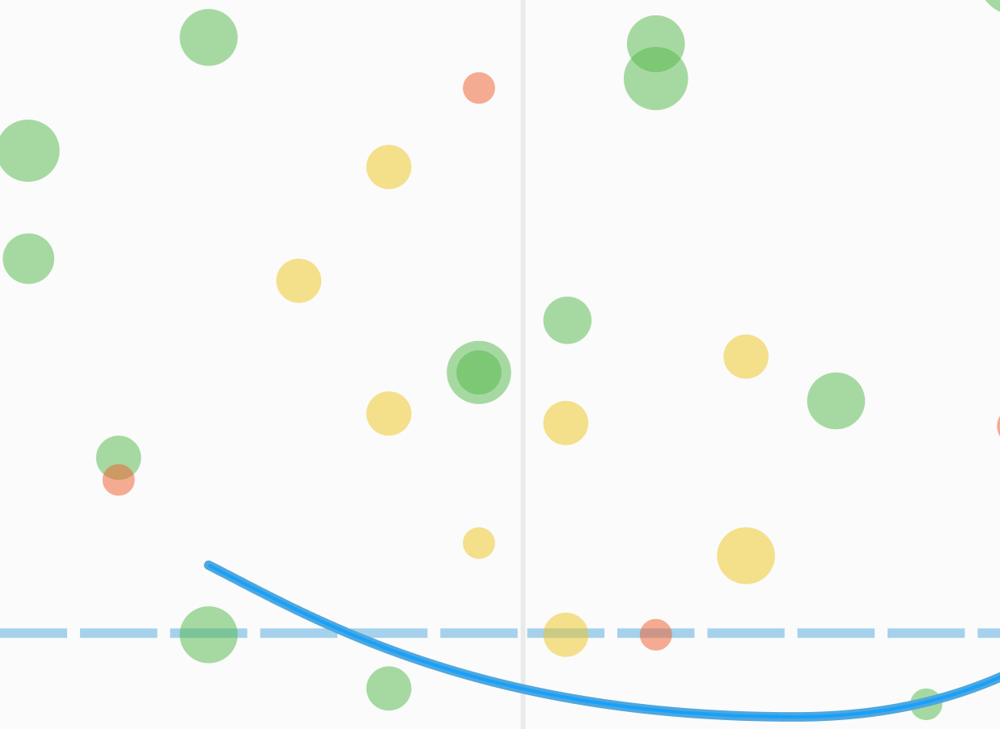
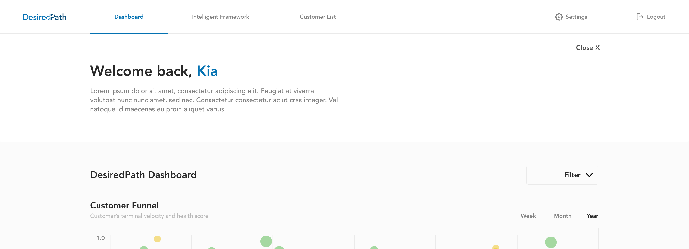
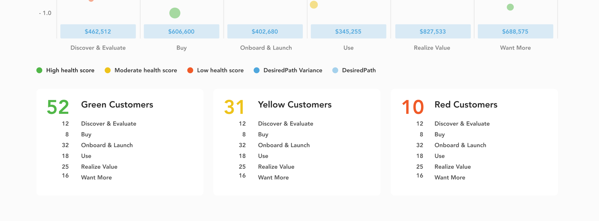

February 16, 2020
To take a closer look at the screens and prototype please follow this link.
To play with the prototype, click on the play button beside the login button on the toolbar on the top right of this software.
Below are some of my thoughts for each part of the prototype. As this is first prototype and many things will change, the prototype is not yet fully clickable to save time for the other iterations (e.g. there are only 3 play records on the intelligent framework screen).
After our review session last week, there are a few changes on the dashboard page. The data point's/dot's size varies based on the health score. Another suggestion was putting the dots depending on where the customer is on each stage. You can see the separation of stages by the dotted line across the graph in the middle (each column on the graph has 6 dashed lines, each dashed line representing a phase in that stage). I wasn't too sure how many phases are in each stage so I put 6 in as a placeholder. Please let me know how many phases are in each stage so I can adjust in the next iteration! Also apologies on my terminology if it is wrong.
I've also changed the "Revenue by Phase" chart by changing it into a column chart and adding the total revenue in large font.
The video below shows the filtering capability for the dashboard on the prototype. For this prototype you are only able to filter by CSM, Segment and Green health.
For this interaction, whenever a user hovers over a data point, the dot will "glow" a bit and then the user would be abe to click on whichever dot they are hovering.
Each dot on the graph will have an opacity of 50% so that whenever data points are overlapping, you would still be able to see them. Currently, if a data point is in the same spot with the same size/healthscore, it would be much harder to see or select the dot. I will continue to look into this and to try to fix it in the next iteration.
On the graph, when a user hovers over the revenue, it will glow a bit to indicate that it is clickable. Once the user clicks on it, it would send it them over to the customers list.
When I was designing the screens for the dashboard I thought of two ideas (done in my own time very quickly). When a user opens up DesiredPath, they could be greeted with a message or this can explain how to use your software.
I thought it would also be interesting to show dashboard stats such as how many green, yellows and reds are on the graph. If you'd like I can continue exploring these ideas further.
For this interaction, when a user hovers over a phase name, the phase name will change into a lighter colour indicating that it is clickable. Once a user clicks on the phase name, a box will pop up and will give more information about that stage.
Similar to the phase hover interaction, the box for the revenue will change to a lighter colour. Clicking on it will move the user to the "Customers List" page with the corresponding table for that certain stage.
Just like last interaction, it would be the same for hovering over and clicking on a play. I adjusted this screen a bit by including both the play information and graphic instead of two separate tabs.
Customers list will have the ability to filter by phase. The next iteration I will explore another way for users to digest all of this information and organizing the tables.